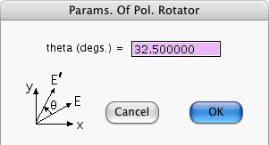

This window opens if you press the Generate Amplitudes... button of the Node Prior-Info. window when its focus node is a valid Polarization Rotator. The window allows you to specify the rotation angle theta that characterizes a Polarization Rotator.
Even if the focus node is a Polarization Rotator, when you press the Generate Amplitudes... button, the computer will refuse to open the above window unless:
Quantum Fog gives names of the vector-field form (Nx, Ny) to the states of the Polarization Rotator.
More information about Polarization Rotators can be found in the document entitled "Quantum Fog Library Of Essays" that accompanies this manual.